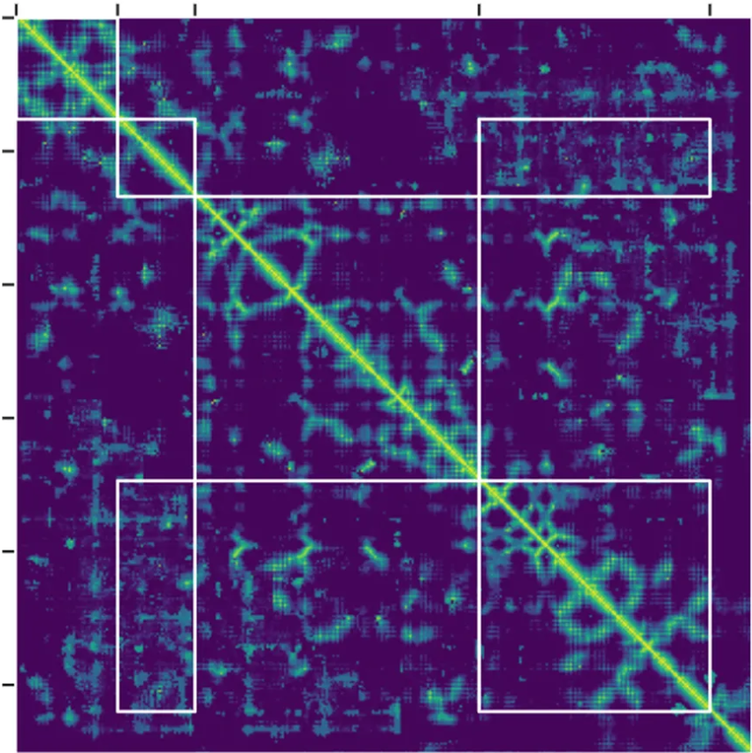
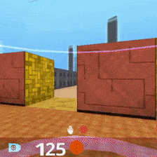
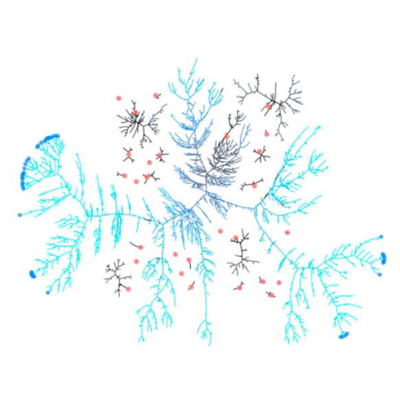
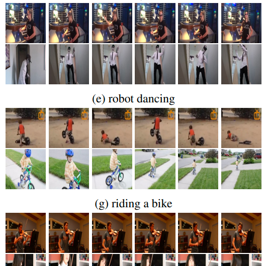
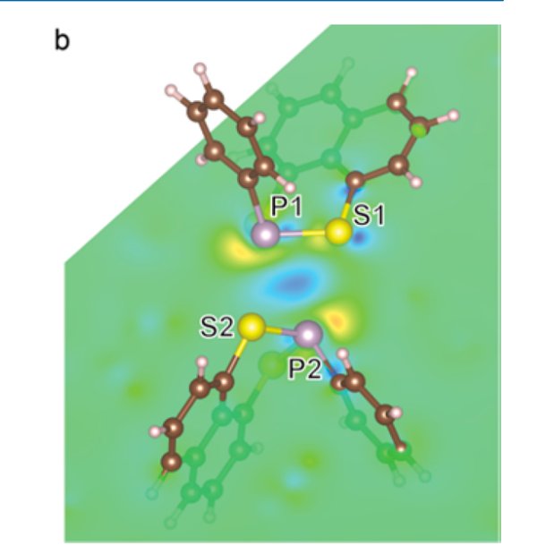
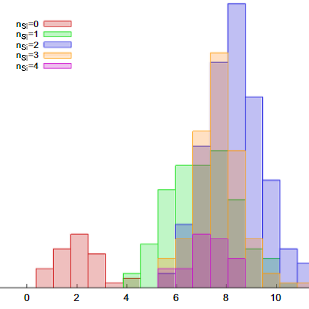
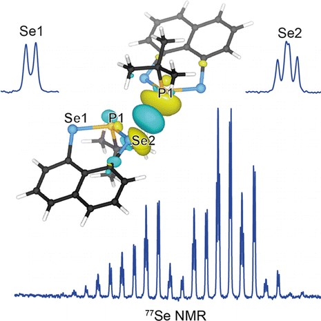
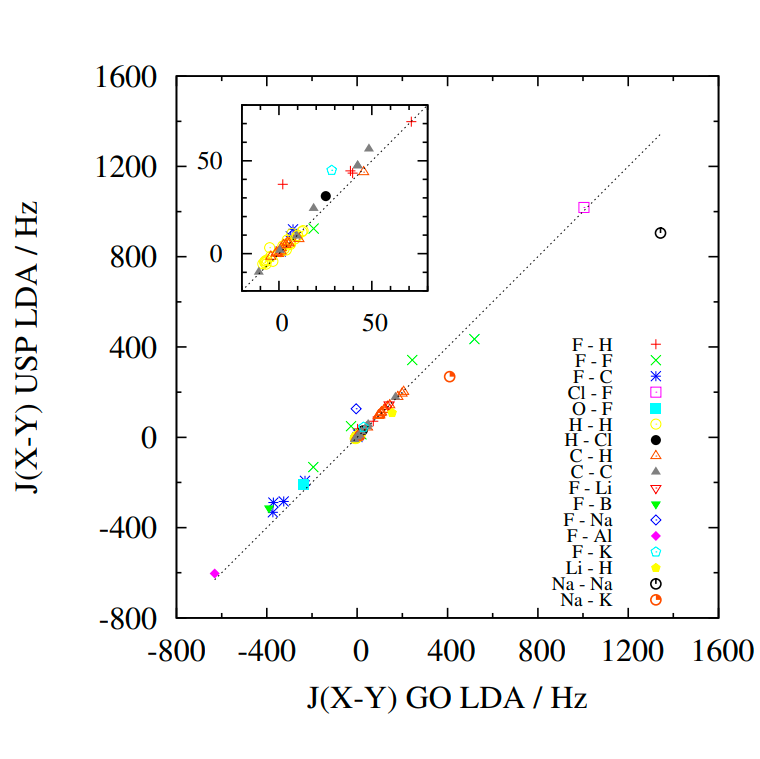

<div class="container front_page">
  <div class="row">
    <div class="col-md-2 logoface">
      
    </div>
    <div class="col-md-8">
      <h1>Tim Green</h1>
      <ul class='links'>
        <li><a href='mailto:timothy.green@gmail.com'>Email</a></li>
        <li><a href='/cv.pdf'>CV</a></li>
        <li><a href='http://twitter.com/tfgg2'>Twitter</a></li>
        <li><a href='http://github.com/tfgg'>GitHub</a></li>
        <li><a href='https://uk.linkedin.com/in/tim-green-6832886'>LinkedIn</a></li>
        <div style='clear:both;'></div>
      </ul>

      <p class='block-highlight'>I'm on the Science Team at <a href="https://deepmind.com/">DeepMind</a> as a Research Engineer. I work on <a href='https://deepmind.com/blog/alphafold/'>AlphaFold</a> and related research.</p>

      <p>My PhD was supervised by <a href='http://users.ox.ac.uk/~oums0549/' target="_blank">Jonathan Yates</a> at the University of Oxford and my thesis was entitled <em><a href='/thesis/abstract/'>Prediction of NMR J-coupling in condensed matter</a></em>. My research interests included computational materials science, density functional theory, quantum chemistry, condensed matter and nuclear magnetic resonance.</p>

      <p>I also co-founded <a href="https://democracyclub.org.uk/" target="_blank">Democracy Club</a>, an effort to improve UK citizens' experience of democracy using technology.</p>
      
      <h2>Research</h2>
      <ul class='publications'>
        <li>
            
            <div class="name"><a href="https://www.nature.com/articles/s41586-019-1923-7">Improved protein structure prediction using potentials from deep learning</a></div>
            <div class="journal"><em>Nature</em>, 2020 [<a href='https://deepmind.com/blog/alphafold/'>blog post 1</a>] [<a href='https://deepmind.com/blog/article/alphafold-casp13y'>blog post 2</a>] [<a href='https://www.nature.com/articles/d41586-019-03951-0'>Nature commentary</a>]</div>
            <div class="clear" style="clear: both;"></div>
        </li>
        <li>
            
            <div class="name"><a href="https://onlinelibrary.wiley.com/doi/full/10.1002/prot.25834">Protein structure prediction using multiple deep neural networks in the 13th Critical Assessment of Protein Structure Prediction (CASP13)</a></div>
            <div class="journal"><em>PROTEINS</em>, 2018</div>
            <div class="clear" style="clear: both;"></div>
        </li>
        <li>
            
            <div class="name"><a href="https://science.sciencemag.org/content/364/6443/859">Human-level performance in 3D multiplayer games with population-based reinforcement learning</a></div>
            <div class="journal"><em>Science</em>, 2019 [<a href='https://deepmind.com/blog/capture-the-flag/'>blog post</a>]</div>
           <div class="clear" style="clear: both;"></div>
        </li>
        <li>
            
            <div class="name"><a href="https://arxiv.org/abs/1711.09846">Population Based Training of Neural Networks</a></div>
            <div class="journal"><em>arXiv</em>, 2017</div>
            <div class="clear" style="clear: both;"></div>
        </li>
        <li>
            
            <div class="name"><a href="https://arxiv.org/abs/1705.06950">The kinetics human action video dataset</a></div>
            <div class="journal"><em>arXiv</em>, 2017</div>
            <div class="clear" style="clear: both;"></div>
        </li>
        <li>
            
            <div class="name"><a href="http://dx.doi.org/10.1021/acs.inorgchem.6b01121">Investigating Unusual Homonuclear Intermolecular “Through-Space” J Couplings in Organochalcogen Systems</a></div>
            <div class="journal"><em>Inorganic Chemistry</em>, 2016</div>
            <div class="clear" style="clear: both;"></div>
        </li>
        <li>
            
            <div class="name"><a href="http://dx.doi.org/10.1016/j.ssnmr.2016.05.004">Visualization and processing of computed solid-state NMR parameters: MagresView and MagresPython</a></div>
            <div class="journal"><em>Journal of Solid State Nuclear Magnetic Resonance</em>, 2016</div>
            <div class="clear" style="clear: both;"></div>
        </li>
        <li>
            
            <div class="name"><a href='http://pubs.acs.org/doi/abs/10.1021/jacs.5b03353'>Unusual Intermolecular “Through-Space” J Couplings in P–Se Heterocycles</a></div>
            <div class="journal"><em>J. Am. Chem. Soc.</em>, 2015, 137 (19), 6172&ndash;6175</div>
            <div class="clear" style="clear: both;"></div>
        </li>
        <li>
            
            <div class="name"><a href='http://scitation.aip.org/content/aip/journal/jcp/140/23/10.1063/1.4882678'>Relativistic nuclear magnetic resonance J-coupling with ultrasoft pseudopotentials and the zeroth-order regular approximation</a></div>
            <div class="journal"><em>J. Chem. Phys.</em>, 2014, 140, 234106, <a href='http://arxiv.org/abs/1403.0524'>arXiv</a></div>
            <div class="clear" style="clear: both;"></div>
        </li>
        <li>
            
            <div class="name"><a href='http://pubs.acs.org/doi/full/10.1021/cm3016935'>Elucidation of the Al/Si Ordering in Gehlenite Ca<sub>2</sub>Al<sub>2</sub>SiO<sub>7</sub> by Combined <sup>29</sup>Si and <sup>27</sup>Al NMR Spectroscopy/Quantum Chemical Calculations</a></div>
            <div class="journal"><em>Chem. Mater.</em>, 2012, 24 (21), 4068&ndash;4079</div>
            <div class="clear" style="clear: both;"></div>
        </li>
      </ul>
    </div>
  </div>
</div>

